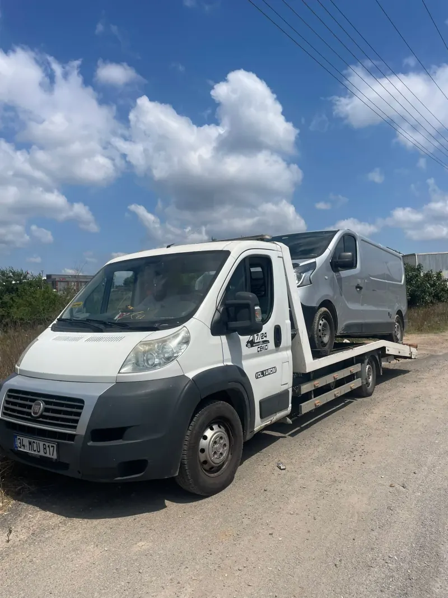
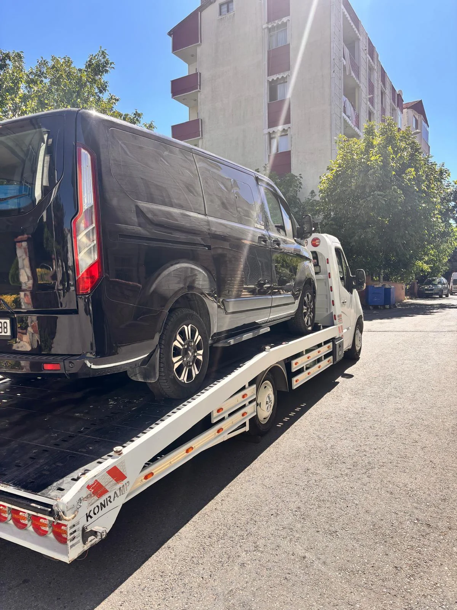

Esenşehir, Esenkent & KADOSAN Oto Çekici ve Kurtarma Hizmet Detayları
Ümraniye Yol Yardım olarak, Esenşehir ve bağlantılı tüm arterlerde haftanın 7 günü 24 saat kesintisiz nöbetçi kurtarıcı ekiplerimizle hizmet vermekteyiz. Bölgenin ana caddeleri, dar ara sokakları ve ana otoyol bağlantılarına hâkim tecrübeli operatörlerimiz sayesinde, çağrınızı aldığımız andan itibaren navigasyon optimizasyonuyla trafiğe takılmadan en geç 10 - 15 Dk içerisinde yanınızda oluyoruz.
Aracınız ister mekanik motor arızası yapsın, ister şanzımanı kilitlensin veya talihsiz bir kaza geçirmiş olsun; düşük açılı hidrolik kayar platformlu çekicilerimiz ve özel jant kavrama aparatlarımızla sıfır sürtünme ve tam taşıma kaskosu güvencesiyle yüklenir. İster en yakın sanayi sitesine (Ümraniye Oto Sanayi, İMES, KADOSAN, Bostancı), ister anlaşmalı yetkili servisinize en uygun sabit fiyat garantisiyle ulaştırılır.
Esenşehir Kritik Arterler ve Hizmet Güzergahları
Ana Ulaşım Yolları: KADOSAN Sanayi Yolu, Baraj Yolu Caddesi, NATO Yolu Caddesi, Kürkçüler Caddesi
Sanayi & Lojistik Odak Noktaları: KADOSAN Oto Sanayi Sitesi, Esenşehir İmalatçılar Sanayi, DES Sanayi Çıkışı
Esenşehir Çekici Süreci Nasıl İşler?
Esenşehir Bölgesinde Taşıdığımız Araç Tipleri
| Araç Tipi | Kullanılan Donanım | Öne Çıkan Güvence & Özellik |
|---|---|---|
| Binek Otomobiller (Sedan, Hatchback, Spor) | Düşük Açılı Hidrolik Kayar Kasa | Tampon ve marşpiyellere sıfır temas, hasarsız yükleme garantisi. |
| SUV, 4x4 ve Elektrikli Araçlar | Tekerlek Kaydırma Bebekleri (Aparatı) | Elektronik el freni veya şanzıman kilitli olsa dahi diferansiyele yük binmez. |
| Motosikletler (Scooter, Racing, Enduro) | Ön Teker Kilitleme Sehpası & Yumuşak Gergi | Devrilme ve çizilme riski olmadan özel dik sabitleme kafesi. |
| Minibüs ve Hafif Ticari (Panelvan, Kamyonet) | Yüksek Tonajlı Güçlü Çekici Platformu | Servis, kargo ve filo araçları için zaman kaybettirmeyen hızlı nakliye. |

📸 Esenşehir Saha Operasyonu
🛡️ Kaskolu & Aparatlı TaşımaEsenşehir Çekici & Kurtarma Hakkında Merak Edilenler
Evet, sanayi içerisindeki tüm dükkanlara veya servisinizden KADOSAN ustalarına nakil yapıyoruz.
Bölgedeki nöbetçi aracımız ortalama 10-15 dakikada yanınızda olur.
Yüksek tonajlı taşıma kapasitesine sahip araçlarımızla hafif ticari filoları çekiyoruz.
Bölge esnafına ve araç sahiplerine en ekonomik sabit fiyatları sunuyoruz.
Evet, yerinde takviye ve çalıştırma desteği sunuyoruz.